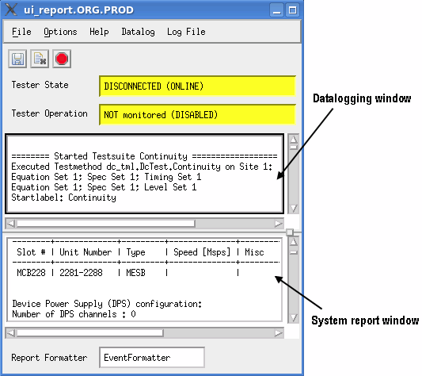

Report window
The report window provides constant and immediate feedback about what is happening on the system. Two lines at the top of this window constantly monitor hardware status and system performance.

The report window opens as soon as you start the software, and stays open as long as you use SmarTest. If the software shuts down unexpectedly it writes the logged data to /tmp/ReportWindow.dump.
Configuring the X window
The graphical user interface of SmarTest is based on the X window system. If you are familiar with it, you can change its size and position on your screen by modifying the Geometry resource for the report window in the file /opt/hp93000/soc/pws/data/.Xdefaults. The number of lines in the report window is always kept between 5000 and 10000. Should you wish to change these defaults, you must modify the XReport.purgeLines and XReport.maxLines resources in the above files.
If you have modified any X resources, you must provide the new values to your system controller.
Configuring the logging panes
When you perform characterization tests, the data log report section is where the measurement values are reported.
The Datalog menu allows you to turn value logging on or off. This will override similar settings that have already been made. You can also display the bin statistics and clear the bins from the Datalog menu.
Configuring the messages printed on the Report Window
You can configure the messages that are printed on the Report Window after a testflow, test suite, or run configuration is manually executed. For details refer to Configuring the messages printed in the Report Window
Functional changes
- Introduced before SmarTest 6.3.2